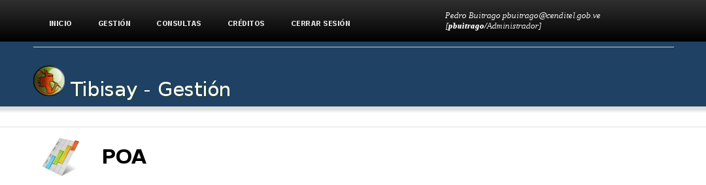
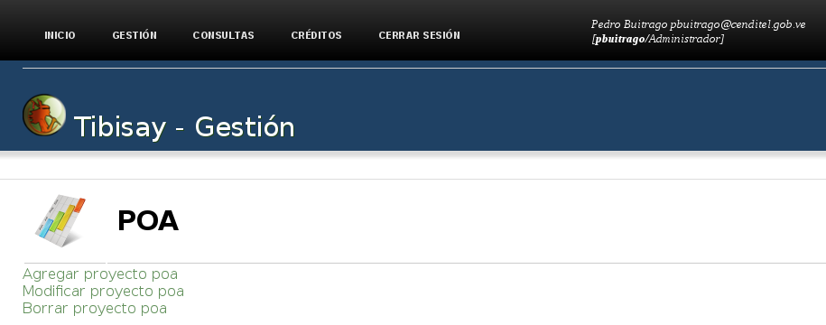

El archivo deftrac.xml utilizada un lenguaje especificado en un archivo XML de definición de tipo de documento (DTD) donde hace una descripción de su estructura y la sintaxis a utilizar a través de etiquetas.
1.- Cabecera del archivo deftrac.xml:
<!-- Documento : deftrac.xml Creado : Creador Autor : Autor Descripcion: Archivo de Entrada para SAFET - Inflow -->2.- Sección 1: Indicación de la ubicación del DTD
<!DOCTYPE operations SYSTEM "file:///home/usuario/.safet/dtd/yawlinput.dtd">Esta linea del especifica la ubicación del archivo yawlinput.dtd en el servidor donde esta instalado el sistema, que para el caso de la documentación, la ubicado sería home/usuario/.safet/dtd/yawlinput.dtd.
3.- Sección 2: Indica las operaciones que va a realizar el sistema
<operation name="POA" desc="Acciones del Plan Operativo Anual" icon="project.png"> </operation>En esta linea se agrega el titulo de la operación acompañado de una imagen, aparece la etiqueta <operation Donde el elemento name=”POA” es lo que aparece en la interfaz (ver figura 1) del sistema y representaría el titulo de la operación y el elemento icon=”project.png” es la imagen que aparece a la izquierda de la operación (POA).

Figura 7: interfaz gráfica que mostraría el titulo de la operación POA 3.- Sección 2.1:
<operation name="POA" desc="Acciones del Plan Operativo Anual" icon="project.png"> </operation> <operation name="agregar_proyecto_poa" desc="Agregar un nuevo proyecto POA" icon=""> <operation name="modificar_proyecto_poa" desc="Modificar un proyecto poa existente" icon=""> <operation name="borrar_proyecto_poa" desc="Elimina un proyecto POA" icon="">En esta sección se define las acciones que se hará sobre la operación POA definido en la sección 2. Para ejemplo de la documentación se definieron 3 acciones, cada una en la etiqueta <operation>. Las acciones serian:
- name=“agregar_proyecto_poa”
- name=“modificar_proyecto_poa”
- name=“borrar_proyecto_poa”
para poder visualizar estas acciones en la interfaz gráfica del sistema se deben declarar o definir en el archivo auth.conf en la sección [Permises] (explicado al principio de esta documentación).
Ejemplo: archivo auth.conf
[Permises] permises.operation.1 = agregar_proyecto_poa permises.accounts.1 = admin permises.types.1 = read;execute;modify permises.roles.1 = Administrador y así se define para cada unos de las acciones en el archivo auth.conf.En la interfaz gráfica se mostraría lo siguiente:

Figura 8: interfaz gráfica que mostraría las acciones asociada a la operación POA
{kind=link}
{kind=link}